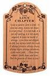

How to Live as a Follower of Jesus
As we said at the very beginning of this booklet, a follower of Jesus is a person who has decided to live life by following Jesus and His plan for our lives. The moral code Jesus lived by is embodied in the Ten Commandments (Exodus 20:1-17). Living as Jesus did starts there.
There are two ways to learn about what the Bible teaches about living as a follower of Christ:
- Study and hear teaching and preaching from the very words of Jesus in the four gospel accounts of His life. Hearing teaching and preaching is a very good way to enrich your spiritual life, but THERE IS NO SUBSTITUTE for reading the Bible yourself.
- Study and hear teaching and preaching from the letters of Paul and the other letter writers of the New Testament. Once again, there is no substitute for reading and studying the Bible yourself.
The Vine and the Branches
It's difficult to single out any one, or even a few, of Jesus' teachings as the best or most important to read. The Sermon on the Mount (in which He teaches ideas called The Beatitudes - Matthew 5 and Luke 6) is perhaps the passage that most people are familiar with, if they know any of Jesus' teachings at all, but I am especially fond of a passage in the book of John.
- John 15:1-17 - The key element in the life of a follower of Jesus

The Greatest of These Is Love
After his dramatic conversion, Paul of Tarsus was both a preacher who reached many for Christ and a prolific writer. In his first letter to the followers of Jesus who lived in Corinth (Greece), he outlined a pattern for selflessness that is a model for the Christ-like life.
- I Corinthians 13:1-13 - The ideal outlook for the follower of Jesus
Transforming Our Minds
Paul tells us in the book of Romans (12:2) not to conform to the image of the world, but to be transformed by the renewing of our minds. In his letter to the followers of Jesus in Philippi (Greece), he tells us how we can accomplish this:
- Philippians 4:8 - Guiding our thoughts
The Fruit of the Spirit
In John 15, Jesus talks about abiding in Him so that we can bear fruit for Him. In his letter to the followers of Jesus in Galatia (a city in what is now Turkey), Paul describes the attributes of people who have devoted themselves to life in the Spirit:
- Galatians 5:22-26 - A life led by the Spirit
The Purpose of Problems
Jesus taught us, and all of the letters of the apostles affirm, that we can expect to have problems in our lives; becoming a follower of Jesus is not a shield from the troubles people face in life. In the book of James, however, we are given a new way to look at our problems. They can be great opportunities for growth.
- James 1:2-4 - Rejoice in your troubles!
Growing in Your Faith
The apostle Peter wrote two letters that are collected in the New Testament. In the second letter, he outlines a pattern and a progression of growing in our faith in God.
- 2 Peter 1:3-8 - Becoming a productive and effective follower of Jesus